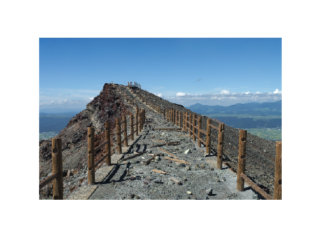
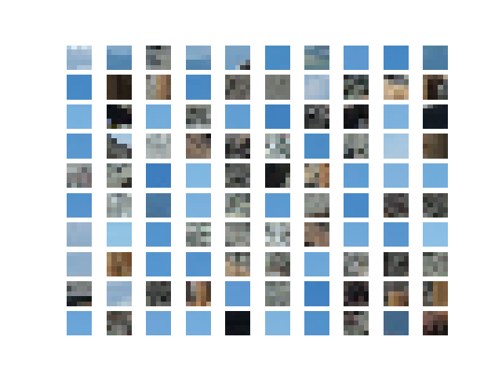

class: center, middle # A little deep learning : # Convolutional neural networks Arthur Mensch .affiliations[  ] .credits[Adapted from O. Grisel and C. Ollion [deep learning course](https://github.com/m2dsupsdlclass/lectures-labs)] --- ## Convolutional neural networks are ubiquitous in computer vision .center[ <img src="images/vision.png" style="width: 600px;" /> ] --- ## Many other applications <br/> ### Speech recognition & speech synthesis -- ### Natural language processing (until recently) -- ### Protein/DNA binding prediction -- ### Any problem with a spatial (or sequential) structure --- ## ConvNets for image classification CNN = Convolutional Neural Networks = ConvNet <br/> -- .center[ <img src="images/lenet.png" style="width: 760px;" /> ] .footnote.small[ LeCun, Y., Bottou, L., Bengio, Y., and Haffner, P. (1998). Gradient-based learning applied to document recognition. ] --- # Outline <br/> ### Neural networks -- ### Convolutions -- ### CNNs for Image Classification -- ### CNN Architectures --- class: middle, center # Neural networks (recall) --- # Neural networks - Transform input $x$ into a representation $z \in \mathbb{R}^d$ $$\forall\, i \in [d], z_i = \sigma(w_i^T x)$$ -- - Repeat: transform $z$ into $z'$, and so on .center[ <img src="images/Colored_neural_network.svg" style="width: 250px;" /> <br/> ] -- - Last layer: output is the vector of scores per class --- class: middle, center # Convolutions --- ## Motivations - Image as input: naturally a 3D tensor $$(640, 480, 3)$$ - Should we flatten it to obtain $x \in \mathbb{R}^{921600}$ ? - Linear model with $1000$ classes: $s = W x + b$. - Shape of $W$ : $921600 \times 1000$ -- - Spatial organization of the input is destroyed ! -- We never flatten directly on large images. We will use transformation with less parameters: **convolution** layers --- ## Using patches - Exploit the local structure of the image $x \in \mathbb{R}^{h\times p}$ (B&W) - Extract the 2-dimensional $3x3$ patches: $$(p\_{i,j} \in \mathbb{R}^9)_{2 \leq i - 1 \leq h, 2 \leq j \leq p - 1}$$ .left-column[ ] .right-column[ ] --- ## Using patches .left-column[ ] .right-column[ ] - Transform all patches using the same vector $w \in \mathbb{R}^9$ - For all $i, j \in [h], [w]$, $ h\_{i,j} = w^T p\_{i,j}$. -- - $w$ is a filter/**neuron** applied to all pixels - $h$ is a new image ! - Repeat the process (**deep**) --- ## Using patches .center[ <img src="images/numerical_no_padding_no_strides_00.png" style="width: 360px;" /> ] - $p$ is a $3 \times 3$ chunk (dark area) of the image _(blue array)_ - Each output filter is parametrized with the $3 \times 3$ weight matrix $\mathbf{w}$ _(small numbers)_ .footnote.small[ <br/><br/> These slides extensively use convolution visualisation by V. Dumoulin available at https://github.com/vdumoulin/conv_arithmetic ] --- ## Convolution in a neural network .center[ <img src="images/numerical_no_padding_no_strides.gif" style="width: 360px;" /> ] - $p$ is a $3 \times 3$ chunk (dark area) of the image _(blue array)_ - Each output filter is parametrized with the $3 \times 3$ weight matrix $w$ _(small numbers)_ The new image (** activations **) obtained by sliding the $3 \times 3$ window and adding a non-linearity: $$ z(x) = relu(w^T p + b) $$ --- ## Motivations ### Local connectivity - Each pixel of $h$ depends on a few pixels of $x$ - Translation invariance: same patch in different place of the image give the same activation -- ### Comparison to the flat approach - Parameter sharing: reduce overfitting - Make use of spatial structure: **strong prior** for vision! -- ### Animal Vision Analogy .small[ Hubel & Wiesel, Receptive fields of single neurons in that cat's striate cortex (1959) ] --- ## Why "convolution" ? 1-D discrete convolution between the weight $w \in \mathbb{R}^d$ and $x \in \mathbb{R}^n$: $$ h\_c = (w \star x)\_c = \sum\_{a+b=c} w\_a . x\_b = \sum\_{c} w\_c \cdot x\_{h + c} $$ -- 2D-convolutions between the weight $w \in \mathbb{R}^d$ and $x \in \mathbb{R}^n$: $$ (w \star x)\_{u, v} = \sum\_n \sum\_m w\_{n, m} \cdot x\_{u + n, v + m} = w^T p\_{u, v} $$ -- $w$ is a convolution **kernel** or **filter** applied to the 2-d map $x$ -- - Equivalent to a linear transform on all patches - **Can be parallelized on a GPU** --- ## Example: convolution image - Image: $x$ of dimensions $5 \times 5$ - Kernel: $w$ of dimensions $3 \times 3$ $ (w \star im) (x, y) = \sum\limits\_{n=0}^2 \sum\limits\_{m=0}^2 w(n, m) . im(x + n - 1, y + m - 1) $ .center[ <img src="images/numerical_no_padding_no_strides.gif" style="width: 360px;" /> ] ??? This formula actually implements a cross-correlation instead of a true convolution: https://en.wikipedia.org/wiki/Cross-correlation The formula for an actual convolution would be: $ (k \star im) (x, y) = \sum\limits\_{n=0}^2 \sum\limits\_{m=0}^2 k(n, m) . im(x - n + 1, y - m + 1) $ Then the indexing of the kernel components would be done in the opposite direction of the image indexing in that case. In practice, convnets can use either cross-correlations or true convolutions, this does not have any impact on the final function computed by the network as the kernel parameters are initialized randomly and are trained to minimize the loss on the training set in both cases. --- ## Channels Colored image = tensor of shape `(height, width, channels)` -- Convolutions are usually computed for each channel and summed: .center[ <img src="images/convmap1_dims.svg" style="width: 300px;" /> ] -- $$ (k \star im^{color}) = \sum\limits\_{c=0}^2 k^c \star im^c $$ --- ## Multiple convolutions .center[ <img src="images/convmap1.svg" style="width: 400px;" /> ] --- ## Multiple convolutions .center[ <img src="images/convmap2.svg" style="width: 400px;" /> ] --- ## Multiple convolutions .center[ <img src="images/convmap3.svg" style="width: 400px;" /> ] --- ## Multiple convolutions .center[ <img src="images/convmap4.svg" style="width: 400px;" /> ] --- ## Multiple convolutions .center[ <img src="images/convmap_dims.svg" style="width: 400px;" /> ] -- - Kernel size aka receptive field (usually 1, 3, 5, 7, 11) - Output dimension: `length - kernel_size + 1` --- ## Strides - Strides: increment step size for the convolution operator - Reduces the size of the output map .center[ <img src="images/no_padding_strides.gif" style="width: 260px;" /> ] .center.small[ Example with kernel size $3 \times 3$ and a stride of $2$ (image in blue) ] --- ## Padding - Padding: artificially fill borders of image - Useful to keep spatial dimension constant across filters - Useful with strides and large receptive fields - Usually: fill with 0s .center[ <img src="images/same_padding_no_strides.gif" style="width: 260px;" /> ] --- ## Pooling - Reduce the intermediary image .center[ <img src="images/pooling.png" style="width: 560px;" /> ] -- - Spatial dimension reduction - Local invariance - No parameters: max or average of 2x2 units <br/><br/> .footnote.small[ Schematic from Stanford http://cs231n.github.io/convolutional-networks ] --- ## Pooling - Spatial dimension reduction - Local invariance - No parameters: max or average of 2x2 units .center[ <img src="images/maxpool.svg" style="width: 380px;" /> ] --- ## Stacking layers - Stack convolutions (with optional stride and padding) $$x \rightarrow h\_1 = relu(w \star x + b) \rightarrow relu(w \star h\_1 + b) \rightarrow \dots $$ - From time to time (creates translation invariance) $$h\_n \rightarrow pooling(h\_{n-1}) \rightarrow \dots $$ ### What happens at the end ? -- After many transformation: - we can flatten the (small image) $\rightarrow h_n$ - Apply a last linear operator $s = w^T h_n + b$ - Get the class probabilities (logistic regression) $$ p = \text{softmax} (w^T h_n + b) \in \mathbb{R}^{1000}$$ --- ## Training - At the end of the day, we are still doing $$ y = f\_\theta(x) $$ - We can compute $\nabla\_{\theta} \ell(y\_{true} - f\_\theta(x))$ -- - $f_\theta$ is a composition of functions - We know how to compute derivatives for compositions -- - This gradient permits to do **stochastic gradient descent** --- ## How do we do it in practice - Use a computing library (similar to numpy) -- - That allows you to compute gradient using automatic differentiation -- - That may run on a GPU (100x faster) -- - That gives you the building blocks: .center[ Jax / PyTorch / Tensorflow] --- class:middle, center # Architectures --- ## Classic ConvNet Architecture ### Input -- ### Convolution blocks - Convolution + activation (relu) - Convolution + activation (relu) - ... - Maxpooling 2x2 -- ### Output - Fully connected layers - Softmax --- # AlexNet .center[ <img src="images/alexnet.png" style="width: 600px;" /> ] .footnote.small[ Simplified version of Krizhevsky, Alex, Sutskever, and Hinton. "Imagenet classification with deep convolutional neural networks." NIPS 2012 ] -- Input: 227x227x3 image First conv layer: kernel 11x11x3x96 stride 4 -- - Kernel shape: `(11,11,3,96)` - Output shape: `(55,55,96)` - Number of parameters: `34,944` - Equivalent MLP parameters: `43.7B` parameters --- ## AlexNet .center[ <img src="images/alexnet.png" style="width: 600px;" /> ] ```md INPUT: [227x227x3] CONV1: [55x55x96] 96 11x11 filters at stride 4, pad 0 MAX POOL1: [27x27x96] 3x3 filters at stride 2 CONV2: [27x27x256] 256 5x5 filters at stride 1, pad 2 MAX POOL2: [13x13x256] 3x3 filters at stride 2 CONV3: [13x13x384] 384 3x3 filters at stride 1, pad 1 CONV4: [13x13x384] 384 3x3 filters at stride 1, pad 1 CONV5: [13x13x256] 256 3x3 filters at stride 1, pad 1 MAX POOL3: [6x6x256] 3x3 filters at stride 2 FC6: [4096] 4096 neurons FC7: [4096] 4096 neurons FC8: [1000] 1000 neurons (softmax logits) ``` --- ## Hierarchical representation .center[ <img src="images/lecunconv.png" style="width: 760px;" /> ] --- ## VGG-16 .center[ <img src="images/vgg.png" style="width: 600px;" /> ] .footnote.small[ Simonyan, Karen, and Zisserman. "Very deep convolutional networks for large-scale image recognition." (2014) ] --- .left-column[ ## ResNet ] .footnote.small[ .left-column[ He, Kaiming, et al. "Deep residual learning for image recognition." CVPR. 2016. ] ] .right-column[ .center[ <img src="images/resnet.png" style="width: 290px;" /> ] ] Even deeper models: 34, 50, 101, 152 layers --- .left-column[ ## ResNet ] .footnote.small[ .left-column[ He, Kaiming, et al. "Deep residual learning for image recognition." CVPR. 2016. ] ] .right-column[ .center[ <img src="images/resnet.png" style="width: 290px;" /> ] ] A block learns the residual w.r.t. identity .center[ <img src="images/residualblock.png" style="width: 290px;" /> ] -- - Good optimization properties --- .left-column[ ## ResNet ] .footnote.small[ .left-column[ He, Kaiming, et al. "Deep residual learning for image recognition." CVPR. 2016. ] ] .right-column[ .center[ <img src="images/resnet.png" style="width: 290px;" /> ] ] ResNet50 Compared to VGG: #### Superior accuracy in all vision tasks <br/>**5.25%** top-5 error vs 7.1% -- #### Less parameters <br/>**25M** vs 138M -- #### Computational complexity <br/>**3.8B Flops** vs 15.3B Flops -- #### Fully Convolutional until the last layer --- ## Deeper is better .center[ <img src="images/deeper.png" style="width: 660px;" /> ] .footnote.small[ from Kaiming He slides "Deep residual learning for image recognition." ICML. 2016. ] --- ## Comparison of models #### Top 1-accuracy, performance and size on ImageNet .center[ <img src="images/architectures.png" style="width: 760px;" /> ] See also: https://sotabench.com .footnote.small[ Canziani, Paszke, and Culurciello. "An Analysis of Deep Neural Network Models for Practical Applications." (May 2016). ] --- class: middle, center # Pre-trained models --- ## Pre-trained models Training a model on ImageNet from scratch takes **days or weeks**. -- Many models trained on ImageNet and their weights are publicly available! -- ### Transfer learning - Use pre-trained weights, remove last layers to compute representations of images - Train a classification model from these features on a new classification task - The network is used as a generic feature extractor - Better than handcrafted feature extraction on natural images --- ## Pre-trained models Training a model on ImageNet from scratch takes **days or weeks**. Many models trained on ImageNet and their weights are publicly available! ### Fine-tuning #### Retraining the (some) parameters of the network (given enough data) -- - Truncate the last layer(s) of the pre-trained network - Freeze the remaining layers weights - Add a (linear) classifier on top and train it with your data -- - Then fine-tune the whole network or the few deepest layers --- ## Data Augmentation .center[ <img src="images/not-augmented-cat.png" style="width: 180px" /> ] -- .center[ <img src="images/augmented-cat.png" style="width: 550px" /> ] --- ## This afternoon in the lab - Pytorch: computing gradients, performing SGD - Using convolutional modules and GPUs